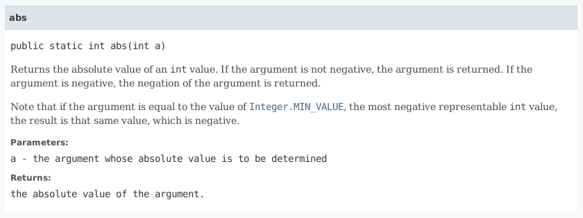
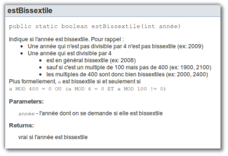

Regardons ce qui existe.
Par exemple, la méthode abs de la classe Math :

Il est essentiel de commenter chaque méthode. C'est ce qui permet de pouvoir les utiliser facilement.
Comment écrire la nôtre :
/**... */ ;
On utilise des tags pour identifier certains éléments. Les plus courants :
/**
* Donne la racine carree d un nombre.
* @param nb le nombre dont on veut la racine carree .
* @return la racine carree du nombre.
* @throws IllegalArgumentException si le nombre est negatif .
*/
public static double sqrt( double nb ) {
if(nb<0) {
throw new IllegalArgumentException("Nombre negatif");
return Math.sqrt(nb);
} Exemple : la valeur absolue
/**
* Calcul de la valeur absolue .
* @param nb le nombre dont on veut la valeur absolue .
* @return la valeur absolue de <code>nb</code>
*/
public static int absolu ( int nb ) {
int abs;
if (nb<0) {
abs = -nb;
} else {
abs = nb;
}
return abs;
}
.) sert de résumé.
La documentation peut contenir des balises HTML.
/** * Indique si l annee est bissextile . Pour rappel : * <ul> * <li>Une annee qui n est pas divisible par 4 n est pas bissextile (ex: 2009)</li> * <li>Une annee qui est divisible par 4</li> * <ul> * <li>est en general bissextile (ex: 2008)</li> * <li>sauf si c est un multiple de 100 mais pas de 400 (ex: 1900, 2100)</li> * <li>les multiples de 400 sont donc bien bissextiles (ex: 2000, 2400)</li> * </ul> * </ul> * Plus formellement, <code>a</code> est bissextile si et seulement si <br/> * <code>a MOD 400 = 0 OU (a MOD 4 = 0 ET a MOD 100 != 0)</code> * @param annee l annee dont on se demande si elle est bissextile * @return vrai si l annee est bissextile */}
Ce qui donne : 
La commande javadoc :
Une bonne javadoc décrit le quoi mais jamais le comment DONC, ne jamais parler de ce qui est privé.
Mauvais exemples :
prix hors tva dans une variable temporaire.
Ne pas écrire ce que javadoc écrit lui-même :
Mauvais exemples :
Pour en savoir plus : http://www.oracle.com/technetwork/articles/java/index-137868.html